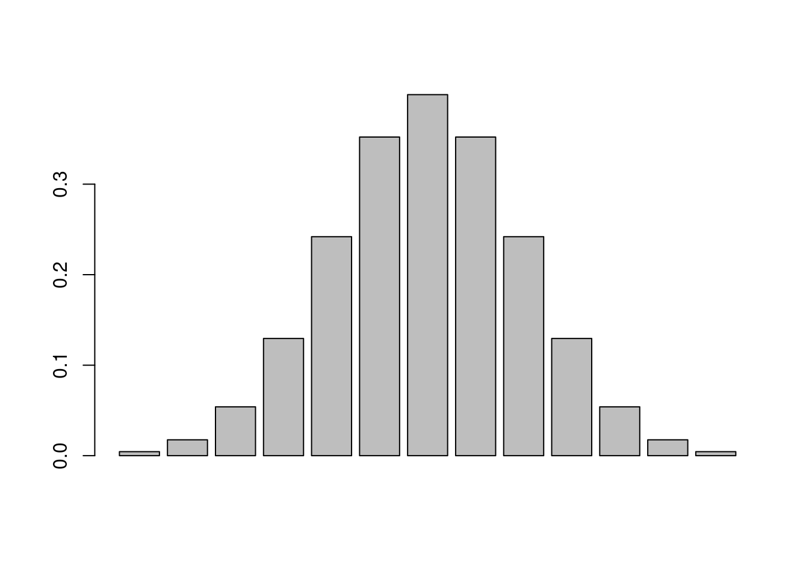
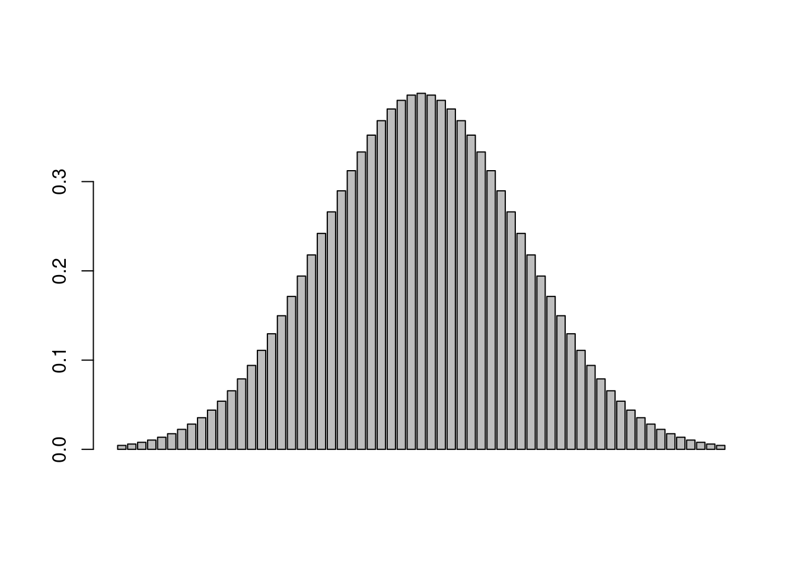

2.5 Probability density
Because we are dealing with a continuous distribution, there are no finite points along the distribution that can have a probability associated with them. Instead, we need to think back to calculus and consider the probability of any given value as an integral.
Imagine that you have a curve, and the area under the curve represents a probability, so it must sum to 1 (i.e. all possible outcomes must be represented). Picture a set of discrete bars underneath that distribution, each representing some portion of the total probability, like we did with the discrete distributions. We will use the function dnorm() for this, which is the density (d for density) of a normal distribution at a vector of values, rather than random draws (r for random). To create our vector of values, we will use the seq() function, which generates a sequence of numbers.

Now imagine that we make each bin smaller, and smaller, and smaller by changing the increments in our sequence (i.e. we make more bins).

As the size of our bins approaches zero, the number of bins approaches infinity. This is essentially what we are doing with an integral. With a continuous distribution, we now have probability density functions, rather than probability mass.

To get back to our original question of the probability of an adult guillemot weighing exactly 990 grams (still a silly question), we can use the dnorm() function to get the probability density at that value.
## [1] 0.01760327What we are likely more interested in, however, is the probability of an adult weighing at least 990 grams. For that, we need the pnorm() function which returns the cumulative density of the normal distribution at a given quantile (for now, think of the quantile as just the cutoff point in adult weights that we are interested in).
# what is the probability of observing an adult guillemot that weighs at least 990 grams?
pnorm(q = 990, mean = 980, sd = 20,
lower.tail=F # we need to specify that we are in the upper tail
)## [1] 0.3085375## [1] 0.1586553## [1] 0.02275013As we get into the tails of the distribution, the probability of observing an adult guillemot that is at least that heavy, or heavier, gets increasingly less likely. This brings us to the definition of the p-value: the probability of observing your data, or data more extreme, if the null is true. In our case, we are treating the null hypothesis as being that guillemot weights are drawn from a normal distribution with a mean of 980 and standard deviation of 20. What if instead we our null hypothesis was that the mean was still 980, but that there was a lot more variability in nature, and the standard deviation was 30? The probability of an adult guillemot weighing that much is now much higher (9.1%, as opposed to 0.02%) because there is more spread around the central tendency.
## [1] 0.09121122